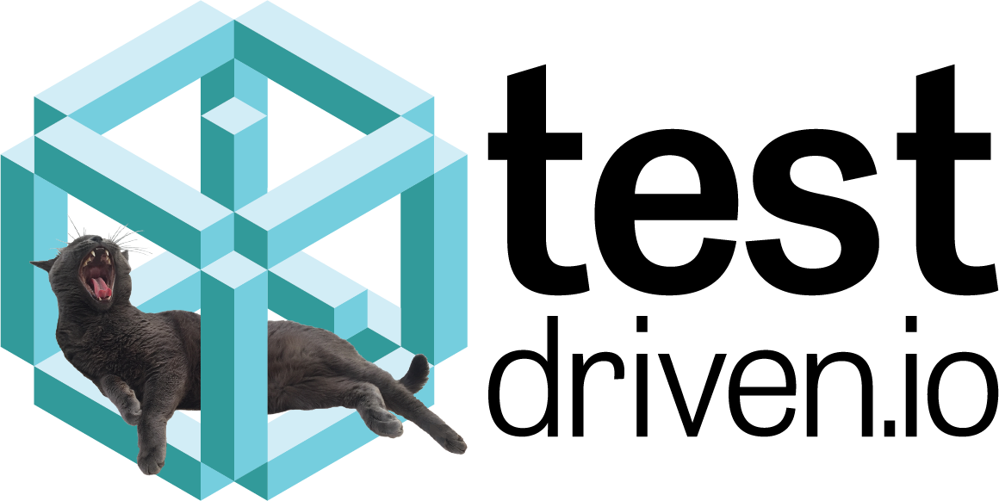

class: center, middle <h1 style="font-size:90px;margin-bottom:0px">Flask on Fargate</h1> <h3 style="margin-top:0px">- Deploying Flask to AWS Fargate -</h3> <br> <div> <span style="vertical-align:60%;">Presented by <em>Michael Herman</em></span> </div> --- ### Agenda -- ##### (1) Intro 1. About Me 1. Objectives -- ##### (2) Theory 1. EC2 vs ECS 1. ECS with Fargate -- ##### (3) Practice 1. Project overview 1. Local Development 1. IAM 1. ECR 1. ECS with Fargate -- ##### (4) Next Steps / Questions --- class: center, middle ## Intro --- ### About Michael ``` $ whoami michael.herman ``` <p style="margin:0"><img src="images/me.png" style="max-width: 10%;" alt="me"></p> -- #### Engineer, Educator, Entrepreneur from Denver, CO 1. Senior Software Engineer at [Eldarion](https://eldarion.com/) 1. All the things at [TestDriven.io](https://testdriven.io) <a href="https://testdriven.io">  </a> -- #### Also 1. Founder and Organizer of [Denver Node.js Meetup Group](https://www.meetup.com/Node-js-Denver-Boulder/) 1. Former Lead Instructor at [Galvanize](https://www.galvanize.com/) 1. Co-founder/author of [Real Python](https://realpython.com) 1. üòç - [tech writing/education](http://mherman.org), [open source](http://github.com/mjhea0), [financial models](http://www.starterfinancialmodel.com/), [radiohead](http://radiohead.com/) --- ### Objectives -- By the end of this tutorial, you should be able to... -- 1. Explain the following AWS services and why you may need to use each of them -- EC2, IAM, ECR, ECS, and Fargate -- 1. Describe the similarities and differences between EC2, ECS, and Fargate -- 1. Explain what container orchestration is and why you may need to use an orchestration tool -- 1. Spin up a Flask app locally with Docker -- 1. Set up an IAM user -- 1. Utilize ECR image registry to store Docker images -- 1. Configure Fargate to run a Flask microservice --- class: center, middle ## Theory --- ### EC2 vs ECS --- ### ECS with Fargate --- class: center, middle ## Practice --- ### Project overview --- ### Local Development --- ### IAM --- ### ECR --- ### ECS with Fargate --- ### That's it! What's next? -- ##### Check your understanding 1. foo 1. bar -- ##### Resources 1. foo 1. bar -- ##### Contact Info 1. [michael@mherman.org](mailto:michael@mherman.org) 1. [mherman.org](https://mherman.org) 1. [@mikeherman](https://twitter.com/mikeherman) -- ##### Questions? ‚úåÔ∏è